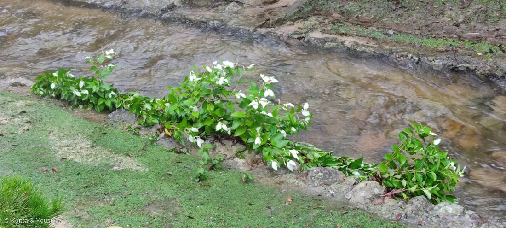

地図を読み込んでいるよ…
🔍 写真も地図も、押しているあいだ拡大して見られるよ（スマホは指を置いてすこし待ってね）。
🌍 の地図＝この子がもともと自生している場所を緑に。日本・東アジア（本州以西の湿地）。
⚠日本のうち北海道は塗っていない（本州以西の湿地の子だから）。
⚠ 地図は国（日本と中国だけ県・省）までしか塗れないから、ほんとうの分布より広く見えていることがあるよ。地図はだいたいの場所。正確なところは、上の文を見てね。
ハンゲショウ（半夏生／半化粧）
Saururus chinensis (Lour.) Baill.
別名 · カタシログサ（片白草）／英名 lizard's tail（トカゲの尾）
ドクダミ科 · Saururaceae（ハンゲショウ属）── 025 ドクダミと同じ科
燻太さんの問い「白い苞が特徴的」「水辺にいるのは、涼しいところが好きだから？」……白いのは葉。そして、涼しさのためじゃない。
⭐⭐⭐ 名前と学名の由来 ── トカゲの尾と、撮影日
- ⭐属名 Saururus は、ギリシャ語 sauros（トカゲ）＋oura（尾）＝「トカゲの尾」＝あの細長く垂れる花序の形。種小名 chinensis は「中国の」。
- 「半夏生（はんげしょう）」は、七十二候のひとつ。毎年7月2日ごろ。「半夏（はんげ）＝カラスビシャク が生ずる頃」という意味で、田植えを終える目安とされた。
- この写真の撮影日は、2023年7月1日。
- 名前の由来の、その日に、この花が咲いている。
- 和名の由来には2説ある——①半夏生の頃に咲くから ②葉が半分白くなる＝半化粧だから。……どちらも、当たっている。
- → だから、おまけは「カラスビシャク（半夏）」にした。見つければ、名前の謎解きが完成する。
この植物のこと
- ドクダミ科＝025 ドクダミと同じ科。図鑑で2種目のドクダミ科。高さ50〜100cmの多年草。ドクダミと同じく、もむと独特のにおいがある。
- 学名 Saururus＝ギリシャ語 sauros（トカゲ）＋oura（尾）＝「トカゲの尾」。垂れて鉤のように曲がる花穂の形から。英名も lizard's tail。
写真の、鉤のように曲がった白い穂。あれが「トカゲの尾」。
⭐ 白いのは、花びらでも苞でもない。「葉」
- 白いのは ふつうの葉。花のすぐ下にある、上のほうの数枚の葉だけが、白くなる。
- しかも——写真を拡大するとわかる。白い葉は、完全に白いのではない。緑が残っている。半分だけ白い。
- だから「半化粧（はんげしょう）」。半分だけ、お化粧をしている。
- 別名 カタシログサ（片白草）＝「片方だけ白い草」。名前が、そのまま観察記録。
- ※花のすぐ下にあるので「苞葉」と呼ばれることもある。燻太さんの「苞」は、その意味では間違いではない。でも正体は、ふつうの葉。
- → 「見た目と正体がちがう」連作の11人目。そしてこれまででいちばん思いきっている——003・014・036は萼、025は総苞、029は苞。どれも「花の一部」だった。この子は、ただの葉を、そのまま看板にした。
なぜ、葉を白くするのか ── 花に、花びらがないから
- ドクダミ科の花には、花弁も萼もない。小さな花が穂にびっしり並ぶだけ。そのままでは、虫の目に留まらない。
- 025 ドクダミは、総苞を4枚、白くして看板にした。
- 042 ハンゲショウは、葉を白くして看板にした。
- 同じ科の、同じ問題（花が地味）への、ちがう答え。
⭐⭐ そして、花が終わると、白い葉は緑に戻る
- 白は、葉緑素を減らした（そして葉肉に空気の層ができた）状態。
- 花期が終われば、緑を取り戻して、また光合成にもどる。
- 看板を、期間限定で出して、終わったらしまう。
- ⭐007 シロツメクサの白いV字も「色素ではなく、葉の中の空気の層」だったのを思い出して。白の作り方は、同じ発想。
問いへの答え ──「水辺にいるのは、涼しいところが好きだから？」
- 涼しさじゃない。「水そのもの」と「競争相手のいなさ」。
- ハンゲショウは抽水植物。根と地下茎は水や泥の中、茎と葉は空中に出す。
- 地下茎（根茎）で横に走って群落を作る。→ 写真で、株が岩の上を一列に這って伸びているのが見える。あれは、地下茎が水際のすきまを走った跡。
- 湿地の泥には、酸素がほとんどない。ふつうの植物は根が窒息して腐ってしまう。
- でも湿地の植物は、通気組織（アレンキマ）——茎の中の、空気の通り道——を持っていて、地上から根へ酸素を送りこむ。
- 水辺に立てるのは、涼しいからじゃない。「そこで生きるための装備」を持っているから。
- そして——湿地は、他の植物が根腐れして入ってこられない場所。
苦手な場所を得意にした者だけが、そこを独り占めできる。 - ※日陰が好きなわけでもない。むしろ日当たりのよい湿地を好む。写真も、明るい水際。
- ⚠ 湿地そのものが減っているので、各地で準絶滅危惧に指定されている。